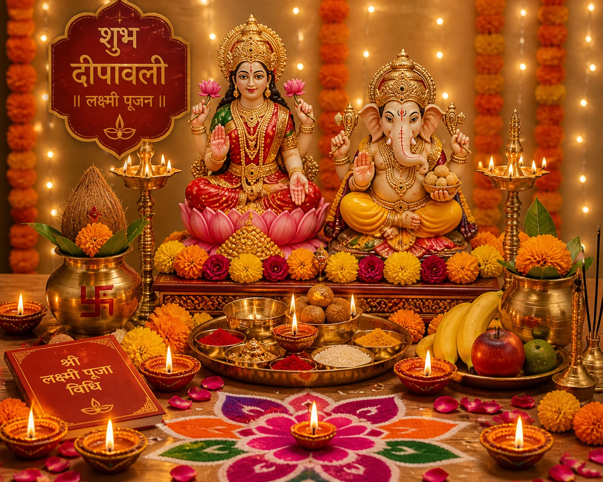
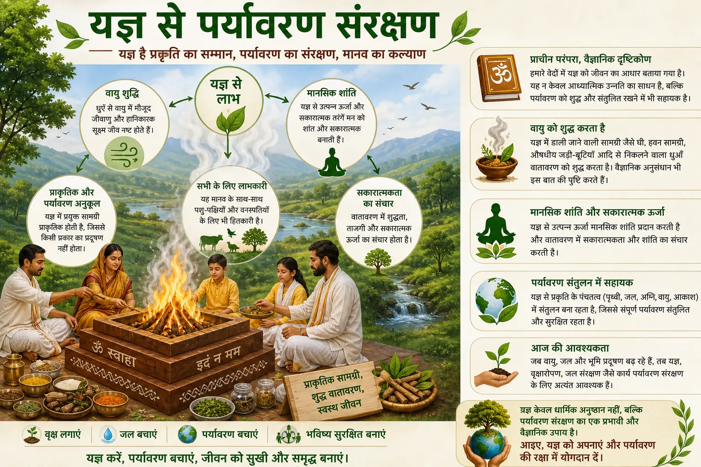

Ritual knowledge
Read educational guides about Hindu ceremonies, Vedic wedding traditions and Yagya.

A step-by-step home puja guide with muhurat advice, a samagri checklist and practical FAQs.

Read about Yagya, ancient Indian tradition and environmental protection.
A perspective on Vedic wedding rituals, family values and lifelong companionship.
An existing guide to important Hindu wedding rituals and the role of a wedding Pandit.
Continue exploring
Helpful answers
Published articles cover Hindu weddings, Yagya, environmental themes and Vedic traditions.
No. They provide general context; discuss individual requirements through an enquiry.
The service directory links to all ceremony pages currently available.
Yes. Each article has a stable URL that can be opened directly.
Use the contact page, phone or WhatsApp and describe your ceremony question.
Explore the services or contact WedMePandit with your ceremony details.